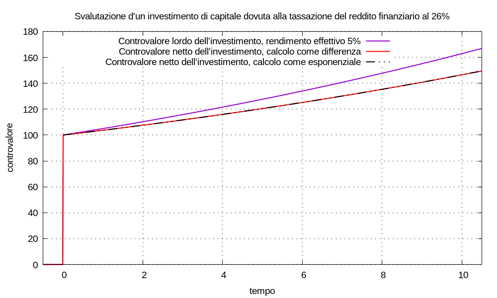

La tassazione dei redditi finanziari non si modellizza con un tasso annuale composto; infatti l’evento “pagamento delle tasse” avviene solo quando:
Il calcolo delle tasse può essere estremamente complicato; qui vogliamo soltanto evidenziare come rappresentarlo come componente della movimentazione di denaro applicata a un multimetro, quando il multimetro è usato per simulare l’investimento in titoli finanziari.
In questa sezione vediamo un metodo semplice per definire il rendimento effettivo al netto delle tasse; non è sempre applicabile. Un altro metodo è esposto nella sezione sull’inserzione a ponte.
Nel seguito: con “lordo” s’intende al lordo delle tasse; con “netto” s’intende al netto delle tasse.
Se vale il seguente modello matematico:
Ulordo(t) = C0 u(t - t0) esp[λlordo (t - t0)]
che permette la definizione del rendimento effettivo lordo come:
ηlordo = expm1(λlordo)
l’investimento iniziale risulta Ulordo(t0) = C0; sappiamo che il controvalore Ulordo(t) al tempo t rappresenta, esso stesso, il valore di liquidazione all’istante t; cioè un movimento:
- Ulordo(t1) δ(t - t1)
liquiderebbe il conto all’istante t1. Nei casi piú semplici possiamo definire il reddito finanziario come differenza:
Ulordo(t) - Ulordo(t0)
e le tasse si calcolano sulla base di questo valore, che risulta essere l’imponibile.
Immaginiamo di poter definire una funzione matematica tax(t, Ulordo) che esegua il calcolo complicatissimo e fornisca il valore di tasse da pagare se dovessimo liquidare il controvalore Ulordo(t) al tempo t.
Osservazione Le tasse sul reddito finanziario si pagano solo quando tale reddito è positivo, cioè è un profitto; se il reddito è negativo, cioè è una perdita, il calcolo della funzione tax(t, Ulordo) deve risultare pari a zero.
Siccome la funzione tax(t, Ulordo) calcola l’entità delle tasse da pagare al momento della liquidazione: possiamo comprendere la definizione del controvalore al netto delle tasse come:
Unetto(t) = Ulordo(t) - tax(t, Ulordo)
ci proponiamo di costruire un ragionamento che permetta la definizione del rendimento effettivo netto come:
ηnetto = expm1(λnetto) = expm1(λlordo + λtax)
il cui la grandezza λtax è una decurtazione e dev’essere calcolata a partire dalla funzione tax(t, Ulordo); di conseguenza sia λtax, che λnetto, che ηnetto sono funzione del tempo, del controvalore e delle regole di calcolo delle tasse sui redditi.
Il risultato che vogliamo ottenere, per t ≥ t0, ha la forma:
Unetto(t) = C0 u(t - t0) esp[λnetto (t - t0)]
⇒ Unetto(t) = C0 esp[(λlordo + λtax) (t - t0)]
⇒ Unetto(t) = Ulordo(t) esp[λtax (t - t0)]
vogliamo che moltiplicare il controvalore lordo per esp[λtax (t - t0)] abbia lo stesso effetto della sottrazione:
Unetto(t) = Ulordo(t) - tax(t, Ulordo)
possiamo scrivere la differenza tra lordo e netto come:
tax(t, Ulordo) = Ulordo(t) - Unetto(t)
e anche come:
Ulordo(t) - Unetto(t) = Ulordo(t) - Ulordo(t) esp[λtax (t - t0)]
elaborando quest’ultima:
⇒ Ulordo(t) - Unetto(t) = Ulordo(t) { 1 - esp[λtax (t - t0)] }
⇒ tax(t, Ulordo) ÷ Ulordo(t) = 1 - esp[λtax (t - t0)]
⇒ log[ 1 - tax(t, Ulordo) ÷ Ulordo(t) ] = λtax (t - t0)
in definitiva, per t > t0:
λtax(t, Ulordo) = log1p[ - tax(t, Ulordo) ÷ Ulordo(t) ] ÷ (t - t0)
Se abbiamo a disposizione la funzione tax(t, Ulordo) e c’interessa calcolare il controvalore netto abbiamo due possibilità:
Unetto(t) = Ulordo(t) - tax(t, Ulordo)
Unetto = C0 u(t - t0) esp[(λlordo + λtax) (t - t0)]
Esempio (calcolo del rendimento effettivo netto) Usiamo un multimetro per simulare il controvalore d’un titolo finanziario secondo i seguenti dati:
- il rendimento effettivo lordo sia ηlordo = 5%;
- all’istante t0 = 0 investimento di C0 = 100;
- all’istante t1 = 10 liquidazione totale di Ulordo(t1);
- la funzione di calcolo delle tasse sia:
tax(t, Ulordo) = 0,26 [Ulordo(t) - Ulordo(t0)] u(Ulordo(t) - Ulordo(t0))in cui: Ulordo(t) - Ulordo(t0) è il reddito finanziario; il gradino di Heaviside annulla il risultato nei casi in cui il reddito finanziario sia una perdita.
Configuriamo un multimetro con λlordo = log1p(ηlordo); usando l’equazioni ricavate, la decurtazione causa tasse risulta:
λtax ≈ -0,010578566610969835la remunerazione netta risulta:
λnetto = λlordo + λtax = 0,038211597558462214e il rendimento effettivo netto risulta:
ηnetto = expm1(λnetto) ≈ 3,89%